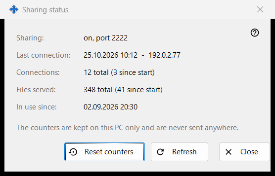
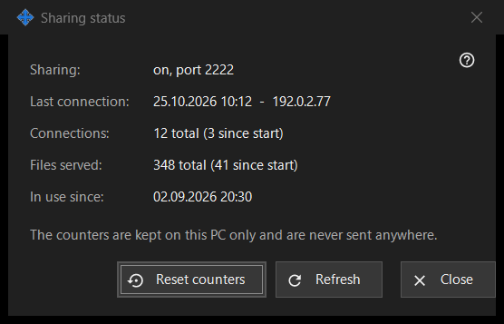

Sharing status
What this is for
Shows the current state of the sharing and its simple counters. It opens from the 'Statistics' link of the main window.


In this order
- Read the state at the top.
- Check the last connection, the number of connections and the files served.
- Press 'Refresh' for new values.
- Press 'Reset counters' to start the counts again.
- Press 'Close'.
The elements
State
'Sharing:' says whether sharing is running and on which port, or that it is off, or that the worker is unavailable. 'In use since:' shows when the sharing started.
Counters
'Last connection:' shows the time of the last phone, or 'never'. 'Connections:' and 'Files served:' show the total and, in brackets, the number since the last start. The counters are kept on this PC only and are never sent anywhere.
Refresh and reset
'Refresh' reads the values from the server again. 'Reset counters' asks first: the previous values cannot be restored. If the reset fails, the button shows 'Reset failed'. 'Close' leaves the window.
Manager settings · SFTP sharing settings · Exchange server settings